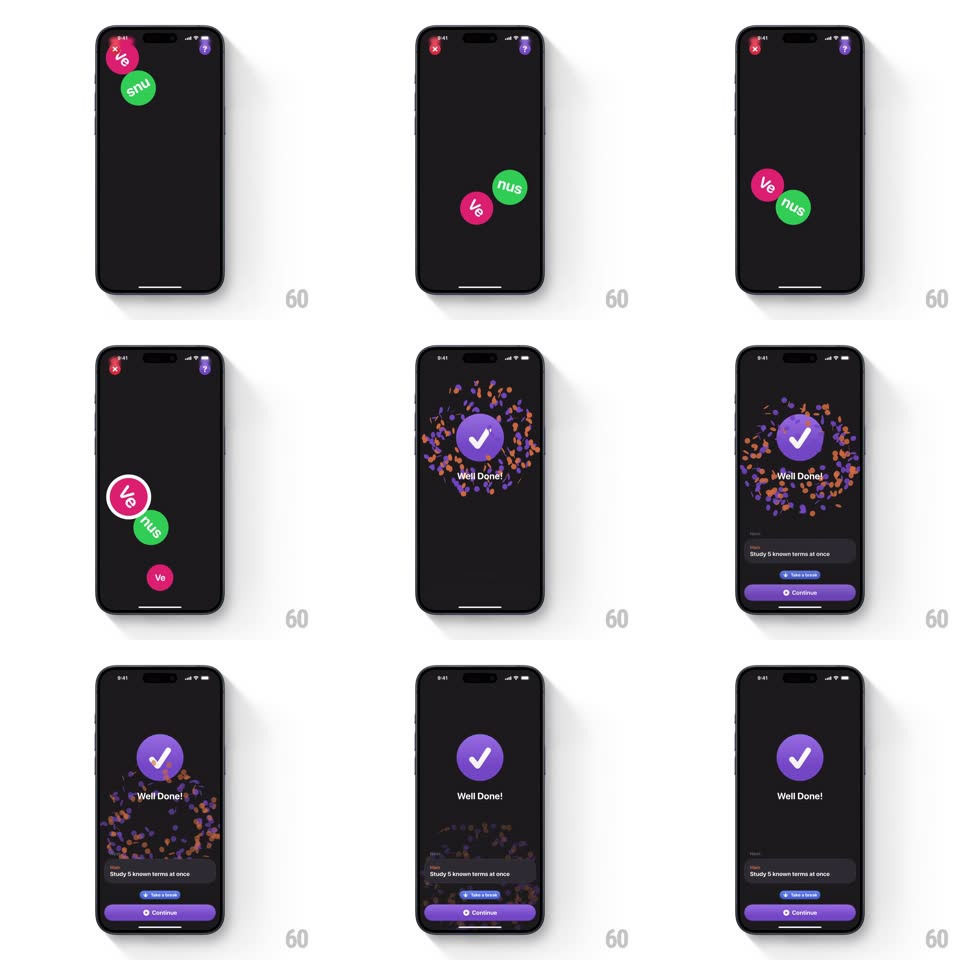

Media
Frame-by-frame

Rebuild this interaction 1:1: Study Snacks' completion moment - floating colored word bubbles (Ve, nus, M, cur, y, &) drift and merge on a dark canvas, then a confetti burst rings a purple check circle with "Well Done!" and Take a break / Continue options.

Rebuild this interaction 1:1: Study Snacks' completion moment - floating colored word bubbles (Ve, nus, M, cur, y, &) drift and merge on a dark canvas, then a confetti burst rings a purple check circle with "Well Done!" and Take a break / Continue options.
## Integration
Integration: stack-agnostic spec - springs given as stiffness/damping, timed motions as duration + curve; map every value to your framework and animation library of choice.
## Scene
Dark screen, top corners with close and profile buttons. Play state: chunky rounded bubbles in pink, green, orange, teal - each with white text - floating loose, plus a small tray of matching chips at bottom. Success: a purple circle with a white check, "Well Done!" below, confetti bits settling, and a bottom card ("Study 5 known terms at once", Take a break link, purple Continue button).
## Motion spec
Pattern: floating-bubble matching into a confetti success card.
- Bubbles drift with gentle physics (slow sine wander +-14px, 3s, phase-offset; soft-collide repulsion) - alive but calm.
- Tap/drag a bubble to its match: the two accelerate together, merge with a squish (scale 1 -> 0.9 -> 1.05 -> 1, spring ~380/14), and pop off-canvas with a tiny sparkle.
- Final match: remaining bubbles scatter off-screen (300ms, ease-in) as the purple check circle scales in center (spring ~360/15 - one fat bounce) and the check strokes in (220ms).
- Confetti: ~60 bits (small rects + circles in the bubble palette) erupt in a ring around the circle (initial velocity radial, gravity, rotation, 1.4s life) and settle toward the bottom.
- "Well Done!" fades up under the circle; the bottom card slides up last (spring ~340/22) - actions arrive after the celebration.
## Calibration
- Confetti uses the app's own palette - branded celebration, not generic party.
- The whole burst resolves in under 2s to an interactive state.
## Reduced motion
Bubbles fade on match; check circle fades in; no confetti.
## Don't miss
- The merge squish is the game's core feel - bubbles are soft bodies, not buttons.
- Confetti falls BEHIND the check circle - the mark stays readable through the noise.